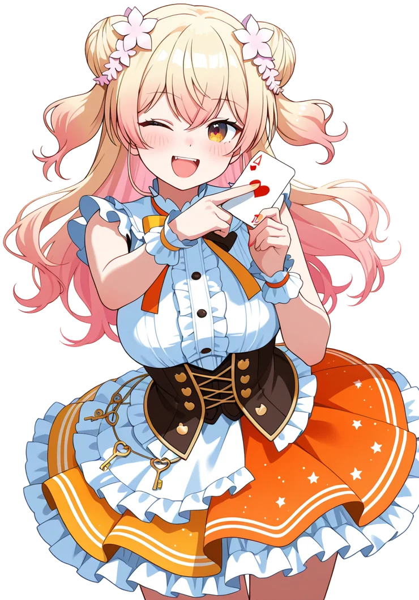
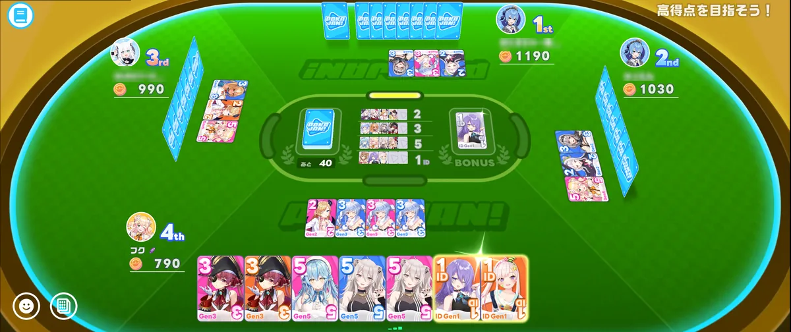
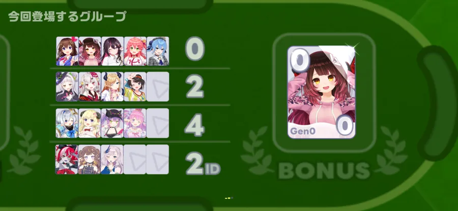

ねっこ集会所 presents
ねっ子 ポカジャン大会
その手札、咲かせにいこう。
2026. 8.30 SUN
Discord「ねっこ集会所」イベントルーム at NEKKO SHUKAISHO
- 開催 Start START20:00／約2時間
- 応募 Entry 締切8/23／Googleフォーム
-
DATE 8/30 2026年（日）
-
OPEN 20:00 だいたい2時間
-
PLACE Discord イベントルーム
-
FORMAT 勝ち上がり
トナメ 4人卓・抽選 -
ENTRY Google
フォーム 解放状況を記入 -
AWARDS 2賞 優勝・最高得点
-
PRIZE ロール
付与 受賞者に贈ります
ABOUT 大会について
ホロドリのミニゲーム「ポカジャン」を、ねっこのみんなで囲む大会です。
4人卓の勝ち上がりトーナメントで行います。トーナメント表の段数と勝ち抜け順位は、参加人数によって変わります。どの卓に入るかは運営が事前に抽選で決めますので、当日は案内された部屋に入るだけで大丈夫です。
ポカジャンを解放していなくても参加できます。応募のときに解放・未解放を書いてもらい、未解放の方が1つの卓に固まらないように振り分けます。ルールは下の「RULE」で予習しておくと、当日そのまま座れます。

- 開催日時
- 2026年8月30日（日）20:00
所要はだいたい2時間くらい - 会場
- Discord「ねっこ集会所」
イベントルームに集合 → 卓ごとのVCへ - 大会方式
- 4人卓の勝ち上がりトーナメント
段数・勝ち抜け順位は参加人数で変動
（CPUは勝ち上がりません） - 参加資格
- ねっこ集会所のメンバー
フォーチュンネットワークが解放済みであること
(第1章EP4で解放されます)
※ポカジャン未解放でも参加できます - 表彰
- 優勝者／最高得点者
受賞者にロールを付与します - 主催
- どこばか
RULE ポカジャンのルール
山札からカードを引き、手札で役を作って「ポカジャン」と宣言するとコインがもらえます。麻雀やドンジャラに近い遊びかたです。


役の作りかた
同じホロメンで揃える
同じホロメンのカードを3枚集めます。いちばん基本の役です。3枚の色までそろうと、もらえるコインが増えます。
グループで揃える
ホロメンは違っても、その期生などのグループを全員分そろえれば成立します。必要な枚数はグループによって変わります。
あと1枚で待つ
あと1枚そろえば成立、という状態です。残りは山札から引くか、他家の捨て札を拾います。捨て札で成立させたときは、その相手からコインを受け取ります。
この大会のルール
勝ち上がり方式
4人卓で対局し、上位が次の卓へ進みます。トーナメント表の段数と勝ち抜け順位は参加人数によって変わるため、当日発表します。
最高得点者
ゲーム終了時の点数が最も高かった人を表彰します。集計のため、各卓の結果はスクリーンショットを撮って運営に送ってください。同卓の1人ぶんで十分です。撮り逃したときは、点数を自己申告してもらえれば集計できます。
人数が半端なとき
4人に満たない卓は、そのまま開始すると空いた席にCPUが入ります。人数合わせはしないので、その卓はCPUを交えて対局してください。
CPUが上位に入ったら
CPUは勝ち上がりません。CPUが上位に入った場合は、その下の順位の人が繰り上がって次の卓へ進みます。CPUに負けても、まだ望みはあります。
卓分けは抽選
どの卓に入るかは運営が事前に抽選で決めます。ポカジャン未解放の方が4人そろってしまわないよう、解放組と混ぜて振り分けます。
もっと詳しく知りたい人へ
点数と役をきちんと知る
役ごとにもらえるコイン、ボーナス、終了時の順位ごとの倍率まで、数字で載っています。実際のゲーム画面つきです。
ゲームエイトやり方と勝つコツ
ひと通りの進めかたと、どの札を捨てると安全かといった立ち回りが書かれています。
ホロドリ攻略Wikiどちらも本大会とは関係のない外部サイトです。当日のルールは上の「この大会のルール」が優先されます。
FLOW 当日の流れ
集合してから解散までの流れです。卓分けは事前に決まっているので、当日は案内どおりに動くだけで大丈夫です。
-
01
イベントルームに集合
開始時刻までにDiscordのイベントルームへ。ここで卓分けと、入る部屋・VCの案内をします。
-
02
ルームを立てて4人そろう
各卓でポカジャンを解放している人がルームを作成し、残りの3人がそこへ入ります。卓ごとに用意されたVCに、同卓の4人で集まってください。
-
03
対局する
見学したい人のために、画面共有ができる人は共有してください。観戦だけの参加も歓迎です。
-
04
結果を送る
対局が終わったら結果画面のスクリーンショットを撮って運営に送ってください。最高得点者の集計に使います。全員の点数が並ぶ画面は数秒で自動的に切り替わるので、終局が近づいたら構えておいてください。撮り逃したときは点数の自己申告で大丈夫です。送り先は当日案内します。
-
05
戻って歓談 / 観戦
イベントルームに戻って歓談するか、他の卓のVCへ移動して観戦してください。
-
06
結果発表・解散
全卓が終わったらイベントルームで結果発表です。優勝者・最高得点者を発表し、受賞者にはロールを付与します。そのあと解散になります。
BRACKET トーナメント表
卓分けは当日、イベントルームで発表します。ここに出るので、自分がどの卓かはこのページで確認できます。勝ち上がりも対局が終わるたびに更新します。
当日をお楽しみに。ここに卓分けが出ます。
ENTRY 参加のしかた
応募はGoogleフォームから。締切までに送信してください。
-
01
Googleフォームを開く
下のボタンから応募フォームへ。ねっこ集会所のメンバーであれば、どなたでも応募できます。
-
02
名前と解放状況を書く
入力するのは①名前と②ポカジャンの解放・未解放の2つだけです。未解放でも参加できますので、正直に選んでください。卓分けに使います。
-
03
卓分けの発表を待つ
応募が締め切られたら、運営が抽選で卓分けをします。当日イベントルームで案内するので、それまでは何もしなくて大丈夫です。
応募フォームを開く 応募締切：2026年8月23日（日）23:59 ／ 開催：8月30日（日）20:00